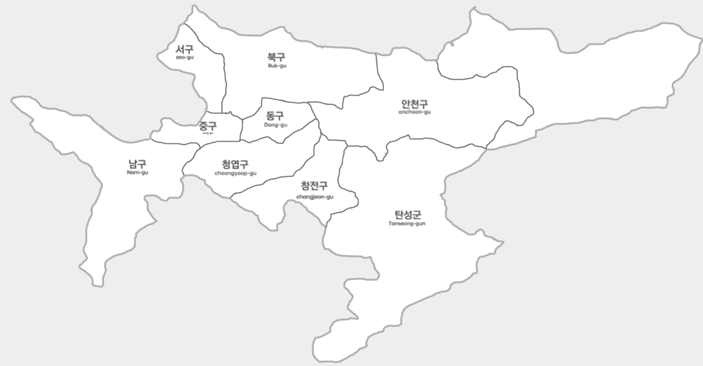

행정구역
효빈광역시 본청 및 8구 1군 행정동·법정동 상세 현황 바로가기
자치구 행정구역 현황
남구 관할 행정동 및 법정동 현황
행정동 현황 (인구 · 면적 · 인구밀도 · 통/반)
(2026.01.01.기준)| 구·군 | 행정동 / 읍·면·동 | 인구 | 면적(㎢) | 인구밀도 | 행정리/통, 반개수 |
|---|
법정동·리별 인구 현황
(2025.07.기준)| 구·군 | 법정동 · 법정리 | 인구(25.7) | 비고 |
|---|
행정구역구분 (효빈광역시 8구 1군 총괄)

행정구역 현황 (효빈광역시 전체)
(2026.01.01.기준)| 구분 | 면적(㎢) | 동·읍·면 | 통/리 | 반 | |
|---|---|---|---|---|---|
| 법정동·리 | 행정동 | ||||
| 계 | 726.52 | 250 | 146 | 7,362 | 48,896 |
| 중구 | 11.46 | 60 | 11 | 215 | 1,329 |
| 동구 | 18.00 | 3 | 14 | 428 | 2,850 |
| 서구 | 22.41 | 10 | 17 | 675 | 4,506 |
| 남구 | 88.24 | 12 | 18 | 912 | 6,081 |
| 북구 | 78.92 | 30 | 24 | 1,344 | 8,914 |
| 안천구 | 90.38 | 40 | 21 | 1,126 | 7,484 |
| 창전구 | 45.72 | 13 | 16 | 865 | 5,771 |
| 청엽구 | 42.37 | 15 | 16 | 1,154 | 7,701 |
| 탄성군 | 329.02 | 67 | 9 | 643 | 4,260 |
인구 현황 (효빈광역시 전체)
(2026.01.01.기준)| 구분 | 인구수(명) | 세대수(세대) | ||
|---|---|---|---|---|
| 계 | 남자 | 여자 | ||
| 계 | 2,968,106 | 1,475,960 | 1,492,146 | 1,291,682 |
| 중구 | 79,801 | 39,501 | 40,300 | 40,923 |
| 동구 | 171,012 | 88,926 | 82,086 | 83,420 |
| 서구 | 270,388 | 129,786 | 140,602 | 142,309 |
| 남구 | 372,589 | 196,727 | 175,862 | 173,297 |
| 북구 | 548,537 | 274,268 | 274,269 | 219,414 |
| 안천구 | 450,286 | 220,640 | 229,646 | 191,611 |
| 창전구 | 350,348 | 169,919 | 180,429 | 143,000 |
| 청엽구 | 470,043 | 226,091 | 243,952 | 184,330 |
| 탄성군 | 255,102 | 130,102 | 125,000 | 113,378 |
이 페이지에서 제공하는 정보에 대하여 만족하십니까?